CRVI000162Kazumasa Nagai - The World of Kazumasa Nagai - Ikeda Museum of the 20th Century Art
Designed by Kazumasa Nagai · 1980
Designed by Kazumasa Nagai · 1980

CRVI000501Leo Jung - The Lucrative, Largely Unregulated, and Widely Misunderstood World of Vaping
The California Sunday Magazine, February 2, 2020 · 2020
The California Sunday Magazine, February 2, 2020 · 2020

CRVI000771Chermayeff & Geismar - Pictures
Mobil Masterpiece Theatre · 1983
Mobil Masterpiece Theatre · 1983

CRVI000663Unknown - New York, March 24, 2008
New York, March 24, 2008 · 2008
New York, March 24, 2008 · 2008

CRVI000567Kenneth Kajoranta - Beyond the Binary
MIT Technology Review, September/October 2022 · 2022
MIT Technology Review, September/October 2022 · 2022

CRVI000404Dave Whyte - Untitled
Animation posted without a title · 750px · 140 frames, 2.8s loop · 2020
Animation posted without a title · 750px · 140 frames, 2.8s loop · 2020

CRVI000311Carl Craig - More Songs About Food And Revolutionary Art
Designer unknown · Planet E · 1997
Designer unknown · Planet E · 1997

CRVI000362Millie Jackson - Caught Up
Designer unknown · Spring · 1974
Designer unknown · Spring · 1974

CRVI000535Chris Nosenzo - Lupin and the Art of the Steal
Bloomberg Businessweek, July 5, 2021 · 2021
Bloomberg Businessweek, July 5, 2021 · 2021

CRVI000407Various Artists - Live Convention "80"
Designer unknown · Disc-O-Wax · 1981
Designer unknown · Disc-O-Wax · 1981

CRVI001266The Horace Silver Quintet - Finger Poppin'
Designed by Reid Miles, photograph by Francis Wolff · Blue Note 4008 · 1959
Designed by Reid Miles, photograph by Francis Wolff · Blue Note 4008 · 1959

CRVI000233Portishead - Portishead
Designer unknown · Go! Beat · 1997
Designer unknown · Go! Beat · 1997

CRVI000018Philip Perkins - Drive Time
Designed by Guy Orcutt · Fun Music · 1985
Designed by Guy Orcutt · Fun Music · 1985

CRVI000559Tanya Moskowitz - The Innovators Issue
WSJ. Magazine, November 2022 · 2022
WSJ. Magazine, November 2022 · 2022

CRVI000043Raime - Quarter Turns Over A Living Line
Designed by Oliver Smith · 2012
Designed by Oliver Smith · 2012

CRVI000070Pierre Henry - Mise En Musique Du Corticalart De Roger Lafosse
Designer unknown · Philips · 1971
Designer unknown · Philips · 1971

CRVI001289The Prestige All Stars - All Day Long
Designer unrecorded · Prestige 7081 · 1957
Designer unrecorded · Prestige 7081 · 1957

CRVI000627Unknown - It's Not Easy Being Mark Zuckerberg Right Now
Bloomberg Businessweek, September 25, 2017 · 2017
Bloomberg Businessweek, September 25, 2017 · 2017

CRVI000758Tetsuya Ishida - Hothouse
Onshitsu · acrylic and oil on canvas · 72.6 × 90.9 cm · 2003
Onshitsu · acrylic and oil on canvas · 72.6 × 90.9 cm · 2003

CRVI000532Thomas Alberty - 3 Wednesdays in America
New York, January 18-31, 2021 · 2021
New York, January 18-31, 2021 · 2021

CRVI000080Karen Gwyer - Needs Continuum
Designer unknown · No Pain In Pop · 2013
Designer unknown · No Pain In Pop · 2013

CRVI000236Kruder & Dorfmeister - G-Stoned
Designer unknown · G-Stone Recordings · 1993
Designer unknown · G-Stone Recordings · 1993
CRVI001255unattributed - Bill Evans, hands behind his head
Photographer unidentified
Photographer unidentified

CRVI000386Conrad Schnitzler - Con
Designer unknown · Egg · 1978
Designer unknown · Egg · 1978

CRVI000774George Giusti - Prevent Forest Fires! Crush Out Your Cigarette
U.S. Forest Service · 1945
U.S. Forest Service · 1945

CRVI000081Mort Garson - Didn’t You Hear?
Designer unknown · Custom Fidelity · 1970
Designer unknown · Custom Fidelity · 1970

CRVI001071David Rudnick - Poster for Pure Halloween — Dave P, Zillas on Acid, Greg D, Steve Vena
Poster · 2017
Poster · 2017

CRVI000304Cabaret Voltaire - The Voice Of America
Designer unknown · Rough Trade · 1980
Designer unknown · Rough Trade · 1980

CRVI000866Julian Stanczak - Solar
Oil on plastic · 91.4 × 91.4 cm · 1972
Oil on plastic · 91.4 × 91.4 cm · 1972
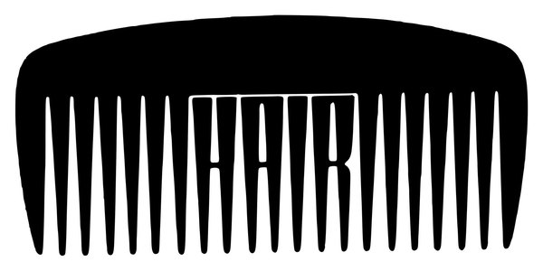
CRVI000996 - HAIR
Trademark · owner not established · designer unknown
Trademark · owner not established · designer unknown

CRVI001115Andrew Hill - Compulsion!!!!!
Designed by Reid Miles · Blue Note BST 84217 · 1967
Designed by Reid Miles · Blue Note BST 84217 · 1967

CRVI000610Unknown - The Coming Republican Crack-Up
New York, March 4, 1996 · 1996
New York, March 4, 1996 · 1996

CRVI000273Andrzej Krauze - Camera Buff
Film Poster · 1979 · 1979
Film Poster · 1979 · 1979

CRVI000155Red Garland Trio - Groovy
Designed by Reid Miles · Prestige 7113 · 1957
Designed by Reid Miles · Prestige 7113 · 1957

CRVI001207Thelonious Monk - The Complete Riverside Recordings
Designer unrecorded · Riverside Records RCD-022-2 · 1986
Designer unrecorded · Riverside Records RCD-022-2 · 1986
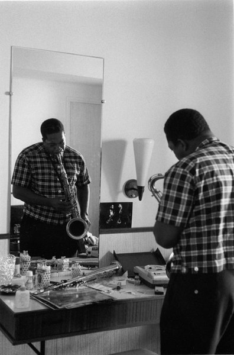
CRVI001152unattributed - John Coltrane playing into a dressing-room mirror
Photographer unidentified · c. 1964
Photographer unidentified · c. 1964

CRVI000314Underworld - Dubnobasswithmyheadman
Designer unknown · Junior Boy's Own · 1994
Designer unknown · Junior Boy's Own · 1994
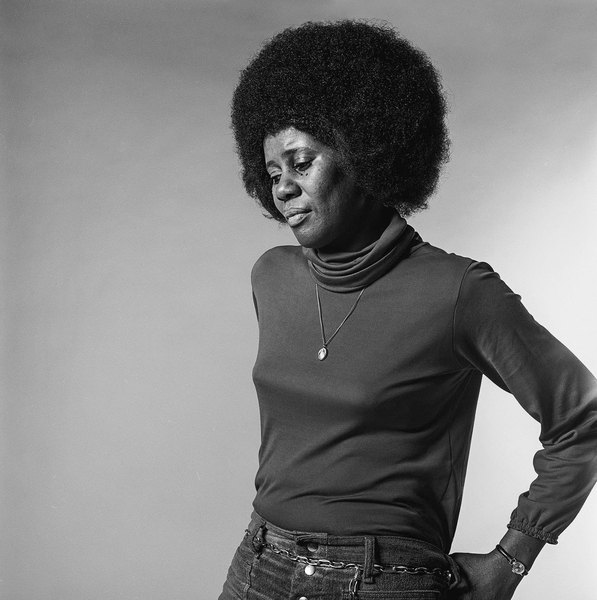
CRVI001256unattributed - Alice Coltrane, studio portrait
Photographer unidentified
Photographer unidentified

CRVI000323Flying Lotus - Cosmogramma
Designer unknown · Warp · 2010
Designer unknown · Warp · 2010

CRVI000536Gail Bichler - The Age of Ishiguro
The New York Times Magazine, February 28, 2021 · 2021
The New York Times Magazine, February 28, 2021 · 2021

CRVI000726Oneohtrix Point Never - Magic Oneohtrix Point Never
Front cover · designed by Robert Beatty · Warp Records · 2020
Front cover · designed by Robert Beatty · Warp Records · 2020

CRVI000434Feist - The Reminder (Deluxe Version)
Designer unknown · Polydor · 2007
Designer unknown · Polydor · 2007

CRVI000222Yayoi Kusama - Kusama with her stuffed fabric works
Photograph by Evelyn Hofer · among the sewn phalluses of her room-filling installations · 1964
Photograph by Evelyn Hofer · among the sewn phalluses of her room-filling installations · 1964

CRVI000671Gail Bichler, Kathy Ryan, JR - Madonna at 60
The New York Times Magazine, June 9, 2019 · 2019
The New York Times Magazine, June 9, 2019 · 2019

CRVI000755Tetsuya Ishida - Untitled
1998 · 1998
1998 · 1998

CRVI000823Seymour Chwast - Seymour Poster
AIGA / NY · 56 × 86 cm · 2009
AIGA / NY · 56 × 86 cm · 2009

CRVI001010BIT, Inc. - BIT
Trademark · Installation and Repair Services for Computers · Natick, Massachusetts · designer unknown · 1971
Trademark · Installation and Repair Services for Computers · Natick, Massachusetts · designer unknown · 1971

CRVI000028Pete Swanson - Man With Potential
Designed by John Twells, Radu Prepeleac · Type · 2011
Designed by John Twells, Radu Prepeleac · Type · 2011

CRVI000486Philip Montgomery - The Olympics Issue
The New York Times Magazine, July 28, 2024 · 2024
The New York Times Magazine, July 28, 2024 · 2024
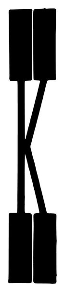
CRVI000929 - Two paired bars joined by a crossing stroke
Trademark · owner not established · designer unknown
Trademark · owner not established · designer unknown

CRVI000041Kevin Harrison - Inscrutably Obvious
Designed by Obvious Products · Obvious · 1981
Designed by Obvious Products · Obvious · 1981

CRVI000072Euglossine - Sharp Time
Designer unknown · 2017
Designer unknown · 2017

CRVI001114Andrew Hill - Andrew!!!
Designed by Reid Miles · Blue Note BST 84203 · 1968
Designed by Reid Miles · Blue Note BST 84203 · 1968

CRVI000033Andy Stott - Too Many Voices
Artwork by Julie Lemberger · 2016
Artwork by Julie Lemberger · 2016
CRVI001007 - BLACK JAZZ
Trademark · owner not established · designer unknown
Trademark · owner not established · designer unknown
CRVI001012 - A right angle of bars stepping into perspective
Trademark · owner not established · designer unknown
Trademark · owner not established · designer unknown
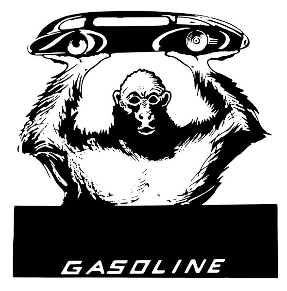
CRVI000963Staten Island Home Utilities, Inc. - GASOLINE
Trademark · Gasoline · Staten Island, New York · designer unknown · 1936
Trademark · Gasoline · Staten Island, New York · designer unknown · 1936
CRVI000920 - CAPTAIN KANGAROO
Trademark · owner not established · designer unknown
Trademark · owner not established · designer unknown

CRVI000887Colonial Sugars Company - S
Trademark · Sugar and Sugar Cane · Jersey City, New Jersey · designer unknown · 1953
Trademark · Sugar and Sugar Cane · Jersey City, New Jersey · designer unknown · 1953
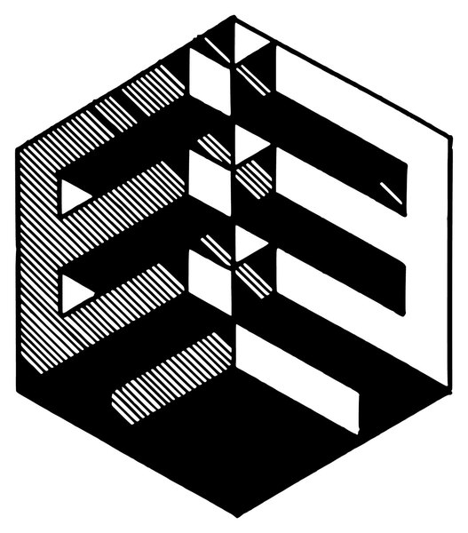
CRVI000967Societe Anonyme Eternit Emaille - An isometric stack of plates and blocks — the product list drawn as a solid
Trademark · Building Materials: Plates, Tiles, Blocks and Pipes of Enameled Asbestos Cement · Cappelle-au-Bois, Belgium · designer unknown · 1928
Trademark · Building Materials: Plates, Tiles, Blocks and Pipes of Enameled Asbestos Cement · Cappelle-au-Bois, Belgium · designer unknown · 1928

CRVI000480Alex Merto - The Retirement Issue
The New York Times Magazine, May 12, 2024 · 2024
The New York Times Magazine, May 12, 2024 · 2024
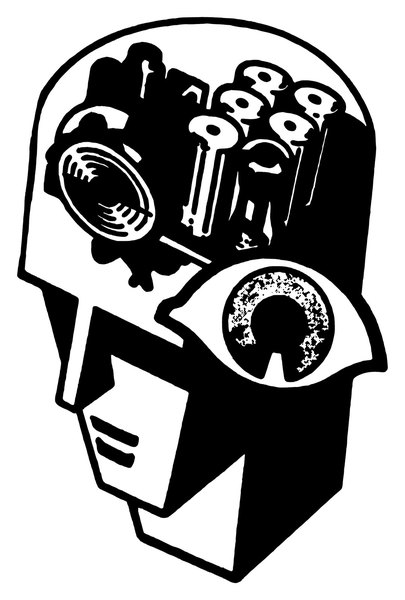
CRVI000998 - A head packed with gears, rollers and an eye
Trademark · owner not established · designer unknown
Trademark · owner not established · designer unknown

CRVI001163Larry Young - Unity
Designed by Reid Miles · Blue Note BLP 4221 · 1966
Designed by Reid Miles · Blue Note BLP 4221 · 1966
CRVI000801Joseph Beuys - [Beuys pointing]
Portrait photograph
Portrait photograph

CRVI001126Dexter Gordon - Our Man In Paris
Designed by Reid Miles, photograph by Francis Wolff · Blue Note BLP 4146 · 1963
Designed by Reid Miles, photograph by Francis Wolff · Blue Note BLP 4146 · 1963

CRVI000224SOIL & "PIMP" SESSIONS - Pimp Of The Year
Designer unknown · Victor · 2006
Designer unknown · Victor · 2006

CRVI000066Bourbonese Qualk - Hope
Designer unknown · Recloose Organisation · 1984
Designer unknown · Recloose Organisation · 1984

CRVI000020Andy Stott - Faith In Strangers
Artwork by Herbert Matter · 2014
Artwork by Herbert Matter · 2014
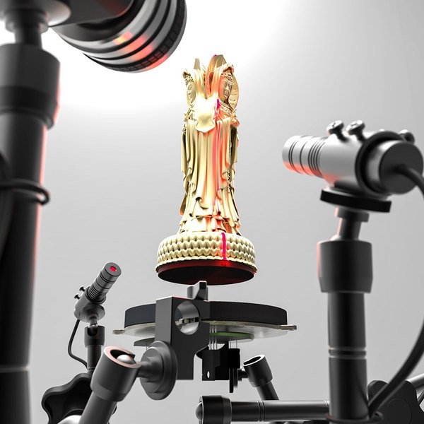
CRVI001075Kim Laughton - Untitled
Cover of DIS Magazine
Cover of DIS Magazine

CRVI000910Shure Brothers, Inc. - S
Trademark · Piezoelectric Instruments to Measure and Analyze Vibrations · Chicago, Illinois · designer unknown · 1952
Trademark · Piezoelectric Instruments to Measure and Analyze Vibrations · Chicago, Illinois · designer unknown · 1952

CRVI000391Oneohtrix Point Never - Replica
Designer unknown · Software · 2011
Designer unknown · Software · 2011

CRVI000904Nixalite Company of America - Two bristling creatures at a barrier; Nixalite's trade is the spiked barrier itself
Trademark · Bird and Rodent Barrier Structure · Davenport, Iowa · designer unknown · 1956
Trademark · Bird and Rodent Barrier Structure · Davenport, Iowa · designer unknown · 1956
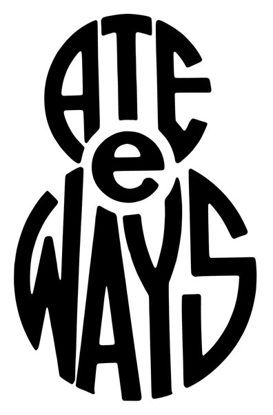
CRVI000990Philomene G. Walsh - ATE e WAYS
Trademark · Sauce for Vegetables, Puddings, Soups and Meats · Chicago, Illinois · designer unknown · 1938
Trademark · Sauce for Vegetables, Puddings, Soups and Meats · Chicago, Illinois · designer unknown · 1938
CRVI000957Hermann Sanders - MOLKUR
Trademark · Lactic Preparation for Use as a General Bodybuilding Tonic · St. Louis, Missouri · designer unknown · 1934
Trademark · Lactic Preparation for Use as a General Bodybuilding Tonic · St. Louis, Missouri · designer unknown · 1934

CRVI001303Horace Parlan - Happy Frame Of Mind
Designed by Reid Miles, photograph by Francis Wolff · Blue Note 4134 · 1966
Designed by Reid Miles, photograph by Francis Wolff · Blue Note 4134 · 1966

CRVI001145Jackie McLean - Let Freedom Ring
Designed by Reid Miles, photograph by Francis Wolff · Blue Note BLP 4106 · 1963
Designed by Reid Miles, photograph by Francis Wolff · Blue Note BLP 4106 · 1963

CRVI000720Oneohtrix Point Never - Magic Oneohtrix Point Never
Insert panel C · designed by Robert Beatty · Warp Records · 2020
Insert panel C · designed by Robert Beatty · Warp Records · 2020
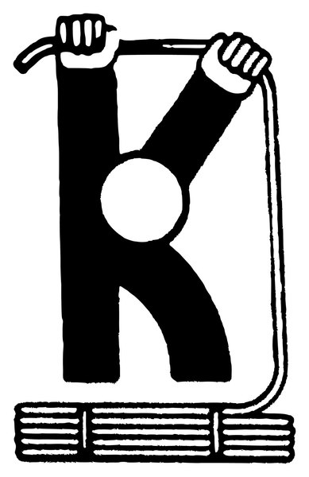
CRVI000930Kemart Corporation - K
Trademark · Drawing Papers and Illustration Boards · San Francisco, California · designer unknown · 1948
Trademark · Drawing Papers and Illustration Boards · San Francisco, California · designer unknown · 1948

CRVI000931Rotron Manufacturing Company, Inc. - R
Trademark · Electric Switches · Woodstock, New York · designer unknown · 1954
Trademark · Electric Switches · Woodstock, New York · designer unknown · 1954

CRVI000945Automotive Products, Inc. - AP
Trademark · Apparatus for Testing and Analyzing Diesel Fuel Pumps · Portland, Oregon · designer unknown · 1956
Trademark · Apparatus for Testing and Analyzing Diesel Fuel Pumps · Portland, Oregon · designer unknown · 1956
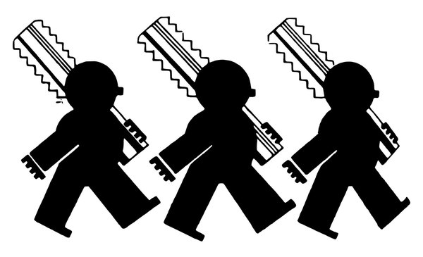
CRVI000889Winter Brothers Company - Three figures shouldering screw taps; the only caption on the page
Trademark · Taps and Dies · Wrentham, Massachusetts · designer unknown · 1946
Trademark · Taps and Dies · Wrentham, Massachusetts · designer unknown · 1946
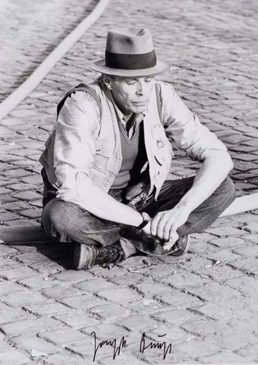
CRVI000804Joseph Beuys - [Beuys seated on the cobbles]
Signed photograph
Signed photograph
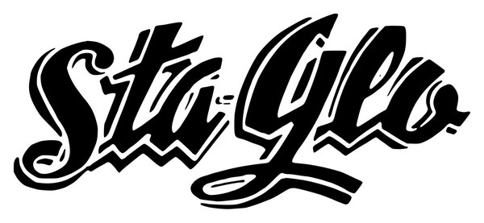
CRVI000978The Darrow Co. - Sta-Glo
Trademark · Varnish and Varnish Extender · Tulsa, Oklahoma · designer unknown · 1936
Trademark · Varnish and Varnish Extender · Tulsa, Oklahoma · designer unknown · 1936
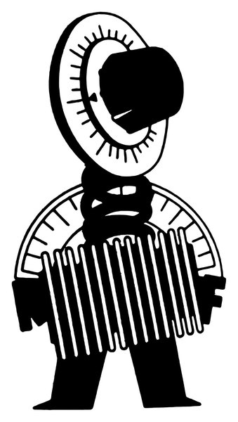
CRVI000999 - A figure playing an accordion, its head a ribbed fan
Trademark · owner not established · designer unknown
Trademark · owner not established · designer unknown
CRVI001011The Wool Bureau, Inc. - The Woolmark — three interlocking skeins
Trademark · Products Made Wholly or Predominantly of Wool · New York, New York · designer unknown · 1964
Trademark · Products Made Wholly or Predominantly of Wool · New York, New York · designer unknown · 1964

CRVI000611Unknown - Suddenly, Everything Is Stainless Steel.
New York, October 14, 1996 · 1996
New York, October 14, 1996 · 1996
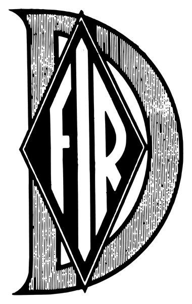
CRVI000982 - D / FR
Trademark · owner not established · designer unknown
Trademark · owner not established · designer unknown
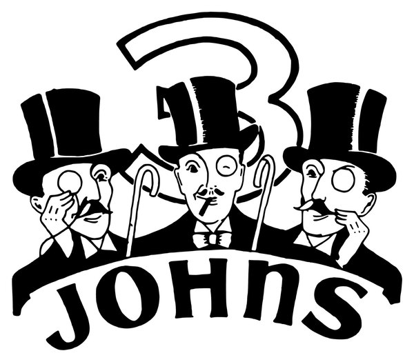
CRVI000953Standard Products Co. - 3 JOHNS
Trademark · Whiskey · Chicago, Illinois · designer unknown · 1934
Trademark · Whiskey · Chicago, Illinois · designer unknown · 1934

CRVI001157John Coltrane, Frank Wess, Paul Quinichette - Wheelin' & Dealin'
Designed by Esmond Edwards · Prestige PRLP 7131 · 1958
Designed by Esmond Edwards · Prestige PRLP 7131 · 1958
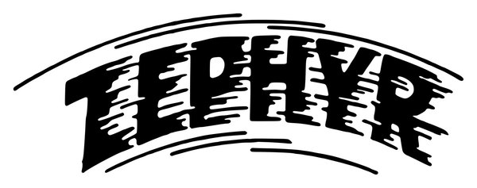
CRVI000977 - ZEPHYR
Trademark · owner not established · designer unknown
Trademark · owner not established · designer unknown
CRVI000958Nitrate Agencies Co. - GENUINE PERUVIAN GUANO
Trademark · Fertilizer · New York, New York · designer unknown · 1925
Trademark · Fertilizer · New York, New York · designer unknown · 1925

CRVI000427Lou Ragland - Is The Conveyor "Understand Each Other®
Designer unknown · SMH Records · 1978
Designer unknown · SMH Records · 1978

CRVI000795Hannah Wilke - S.O.S. Starification Object Series (Curlers)
Gelatin silver print · 101.6 × 68.6 cm · 1974
Gelatin silver print · 101.6 × 68.6 cm · 1974

CRVI000670Gail Bichler, Matt Dorfman - Boeing
The New York Times Magazine, September 22, 2019 · 2019
The New York Times Magazine, September 22, 2019 · 2019
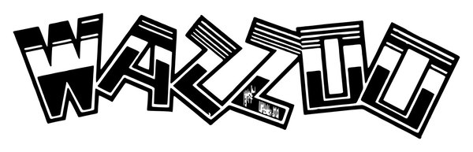
CRVI000979The Waterbury Button Co. - WAZZOO
Trademark · Novelty Humming Musical Instruments · Waterbury, Connecticut · designer unknown · 1936
Trademark · Novelty Humming Musical Instruments · Waterbury, Connecticut · designer unknown · 1936
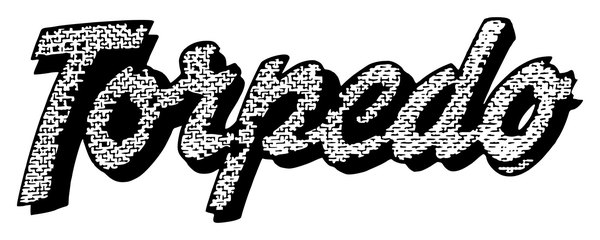
CRVI000987General Mills, Inc. - Torpedo
Trademark · Electrical Flashlights · Minneapolis, Minnesota · designer unknown · 1938
Trademark · Electrical Flashlights · Minneapolis, Minnesota · designer unknown · 1938

CRVI000176The Beatles - Revolver
Designed by Klaus Voormann · Parlophone PCS7009 · 1966
Designed by Klaus Voormann · Parlophone PCS7009 · 1966

CRVI000946Bark Dog Food Company - BARK
Trademark · Dog Meal · Midland, Michigan · designer unknown · 1950
Trademark · Dog Meal · Midland, Michigan · designer unknown · 1950
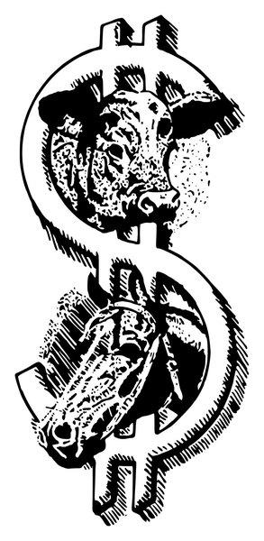
CRVI000960Milwaukee Grains & Feed Co. - $
Trademark · Horse and Dairy Feeds · Milwaukee, Wisconsin · designer unknown · 1928
Trademark · Horse and Dairy Feeds · Milwaukee, Wisconsin · designer unknown · 1928
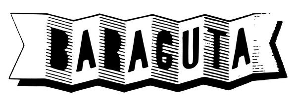
CRVI000936 - BARACUTA
Trademark · owner not established · designer unknown
Trademark · owner not established · designer unknown

CRVI001144Jackie McLean - It's Time!
Designed by Reid Miles, photograph by Francis Wolff · Blue Note BLP 4179 · 1965
Designed by Reid Miles, photograph by Francis Wolff · Blue Note BLP 4179 · 1965

CRVI000181Shigeo Fukuda - Look 1
Exhibition · 103 x 73 cm offset · 1985
Exhibition · 103 x 73 cm offset · 1985

CRVI000498Unknown - Bodies in Motion
National Geographic, May 2020 · 2020
National Geographic, May 2020 · 2020

CRVI000004Laurel Halo - Chance Of Rain
Designed by Bill Kouligas · Hyperdub · 2013
Designed by Bill Kouligas · Hyperdub · 2013

CRVI000629Chin Wang, Hank Willis Thomas in collaboration with Sanford Biggers - Who Owns Black Pain?
Harper's Magazine, July 2017 · 2017
Harper's Magazine, July 2017 · 2017

CRVI000505Gail Bichler - What We've Learned in Quarantine
The New York Times Magazine, May 24, 2020 · 2020
The New York Times Magazine, May 24, 2020 · 2020

CRVI000281Romare - Projections
Designer unknown · Ninja Tune · 2015
Designer unknown · Ninja Tune · 2015